Vloeren
- Inmeten per ruimte
- Rekenen met legpatroon en snijverlies
- Bestellen bij Oaklyn
Van inmeting en calculatie tot offerte, materiaal en factuur. Alles rondom je project in een omgeving.
Het echte portaal, met een voorbeeldklus
Een keer invoeren. Je projectgegevens gaan mee van de eerste inmeting tot de factuur.
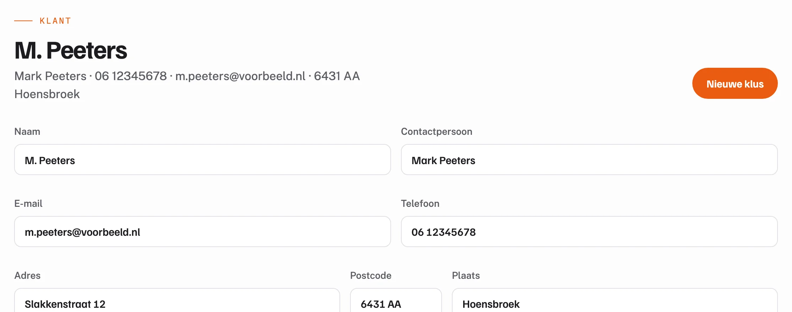
Een keer ingevoerd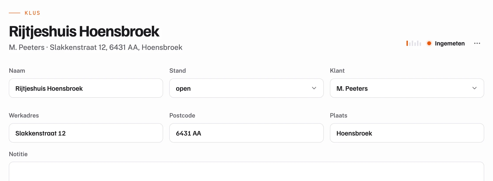
Uit 01 Klant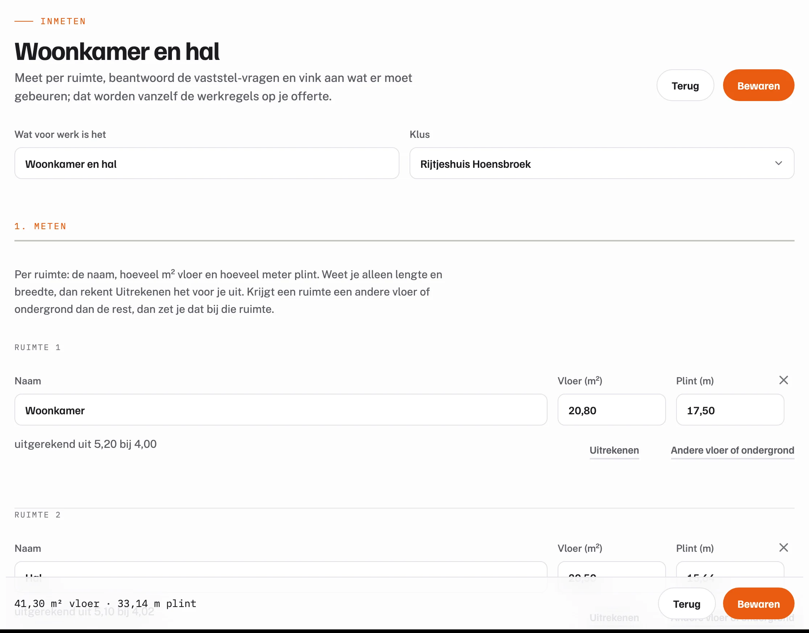
Uit 02 Project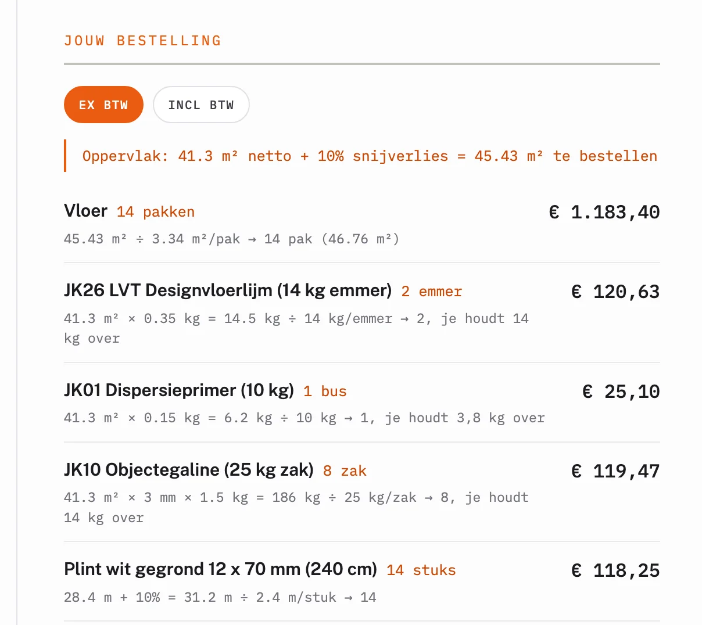
Uit 03 Inmeten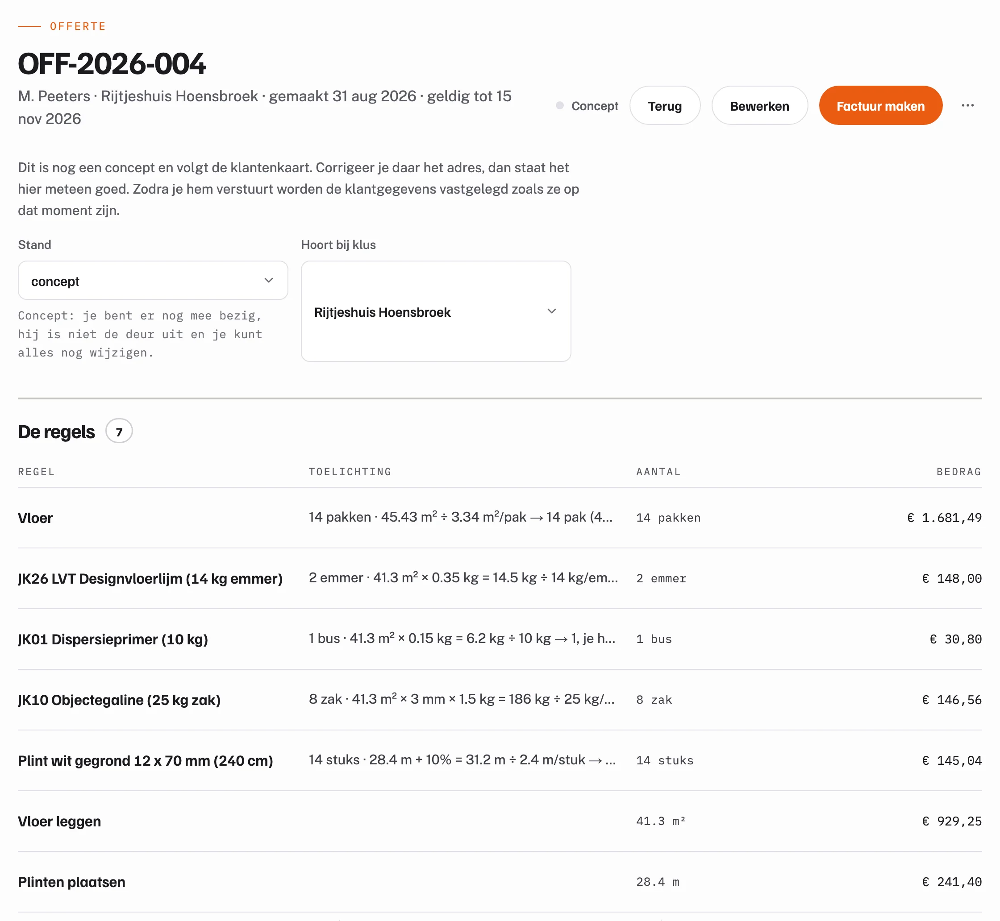
Uit 04 Calculeren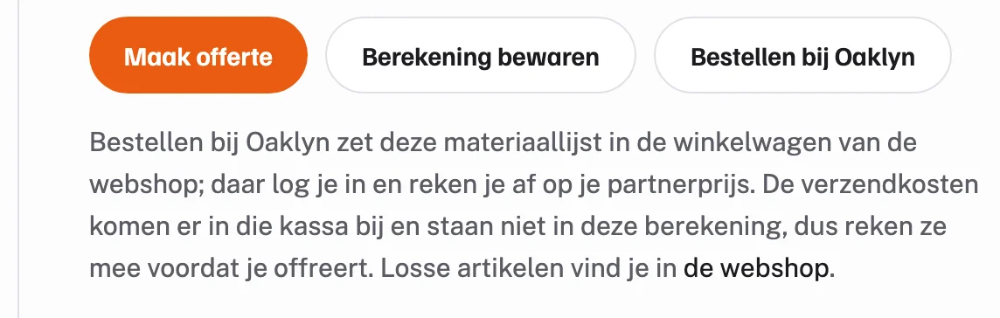
Dezelfde materiaallijst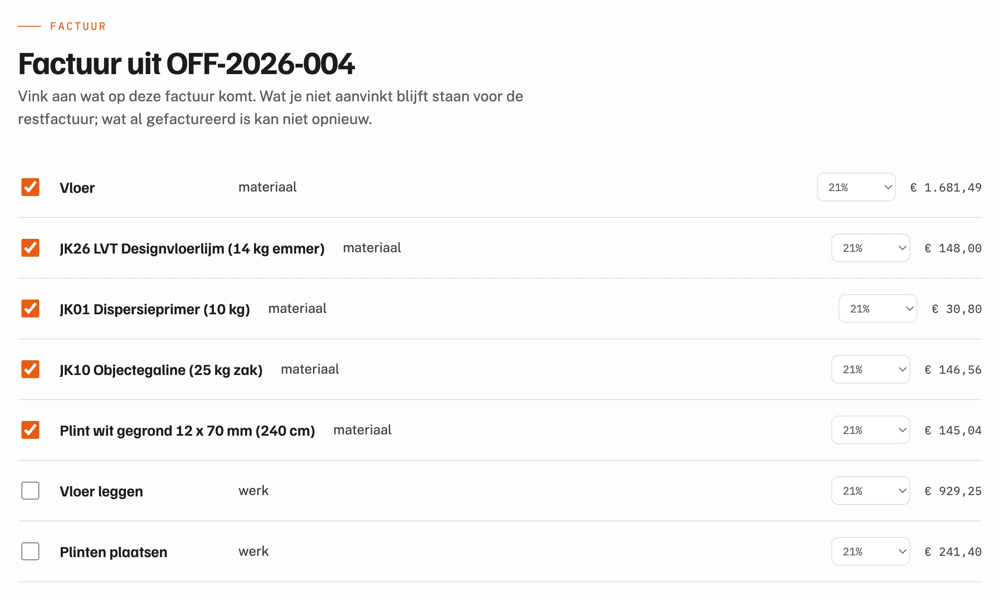
Uit 05 OfferteVoorbeeld: een project met de Vloeren-module, verzonnen gegevens
De basis regelt wat ieder bouwbedrijf nodig heeft. Een module voegt toe hoe jouw vak inmeet, rekent en bestelt, op dezelfde klanten en klussen.
Nieuwe modules bouwen voort op dezelfde basis. Geen tweede account en geen tweede systeem.
Bouwt voort op dezelfde basis.
€0per maand
Framr.One is gratis: de basis en elke module, ook de modules die nog komen. Wij verdienen aan het materiaal dat je via het platform bestelt, niet aan de software.
Binnen Vloeren komen calculatie, materiaalbestelling en partnerprijzen samen. Daarmee verdien je extra marge op je materiaal.

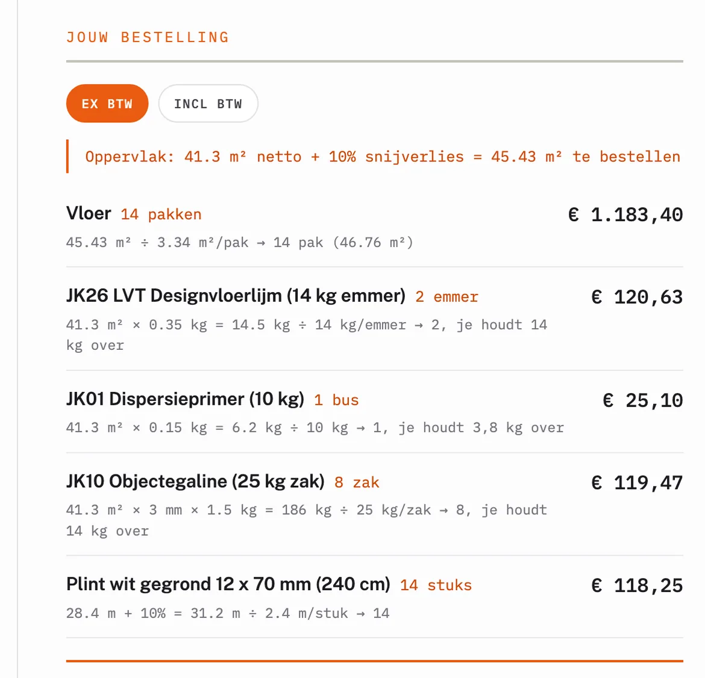
Van inmeting tot materiaalbestelling.
Inmeten, configureren en calculeren vanuit dezelfde projectomgeving.
Nog niet open voor aanmelding
Elke klus met zijn inmetingen, calculaties, offertes en facturen bij elkaar, met de stand erbij.
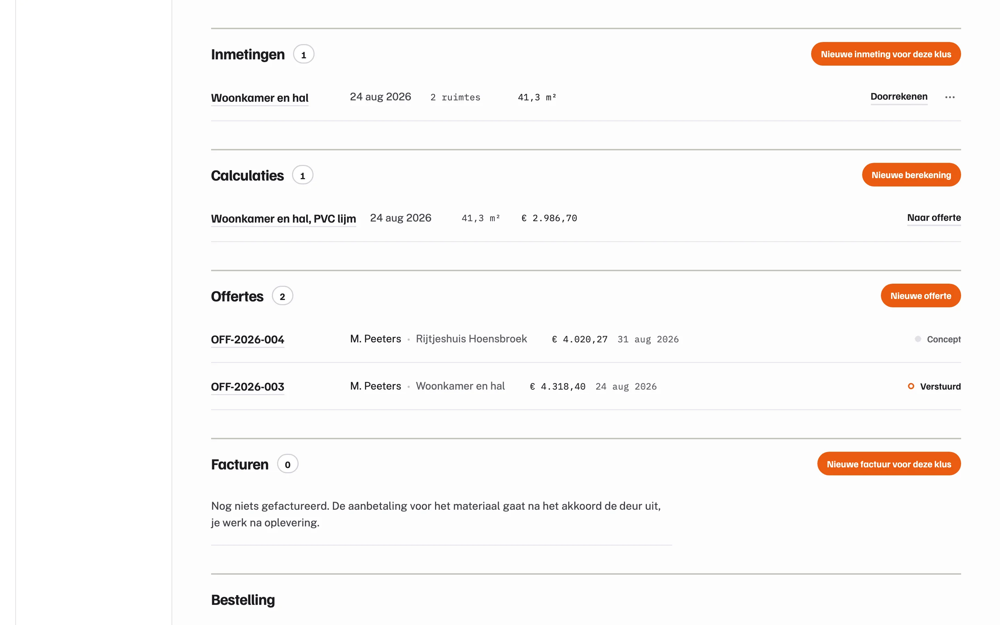
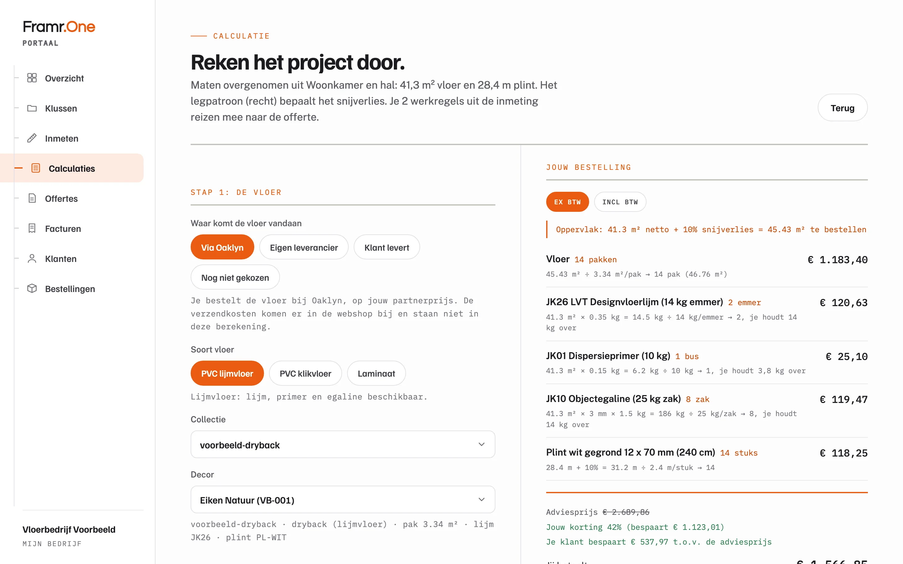
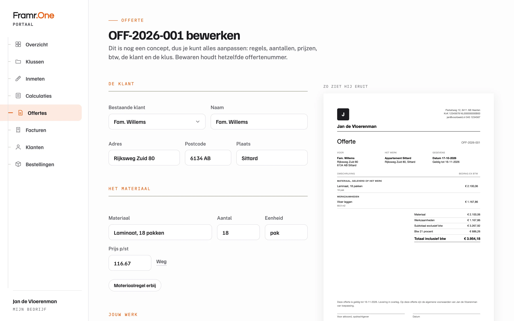
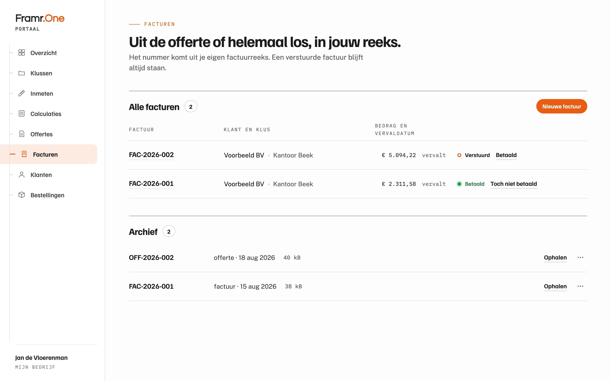
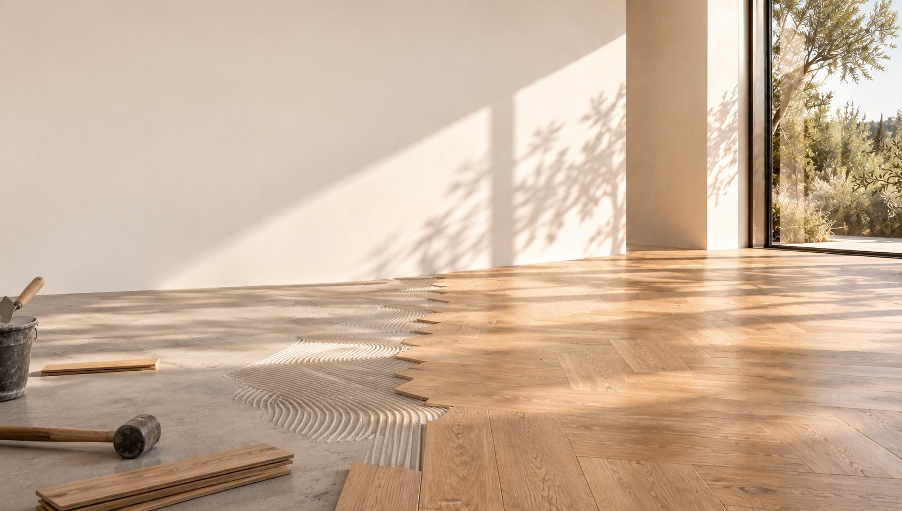
Je meet in op locatie, Framr.One rekent het materiaal uit en zet de bestelling klaar. Het leggen blijft jouw vakwerk.
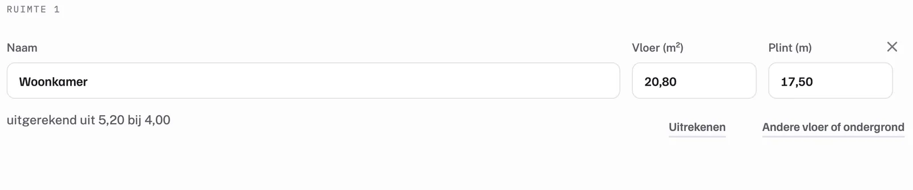
Voor vakbedrijven in de bouw. Vandaag vooral voor de zelfstandige vloerenlegger en de kleine ploeg.
Het portaal werkt met iedere vloer, ook als je je materiaal elders koopt.
De basis: klanten, klussen, offertes, facturen en je documenten. En de module Vloeren: inmeten, calculeren en bestellen bij Oaklyn.
Kozijnen is in ontwikkeling. Het portaal draait in de browser, op je telefoon en op kantoor.
Alles: de basis en elke module, ook de modules die nog komen.
Geen abonnement, geen proefperiode, geen inkoopverplichting. Je account is een e-mailadres en een wachtwoord.
Bel of mail ons, dan krijg je een mens aan de lijn.
Liever eerst zelf kijken? Het portaal werkt zonder account, en de film laat het stap voor stap zien.
Maak je eerste project aan. Of kijk eerst rond in het portaal, zonder account.